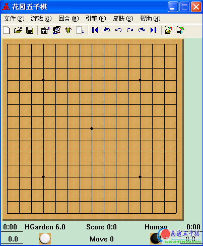
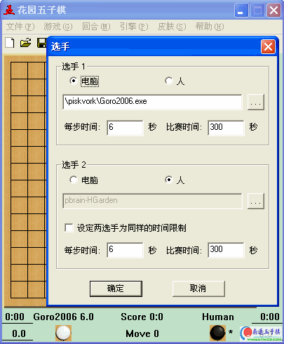
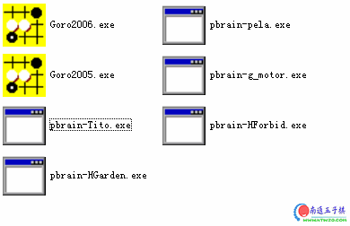

花园五子棋 1.2版＋众多2006Gomoku程序大赛引擎
#1 花园五子棋 1.2版＋众多2006Gomoku程序大赛引擎作者：有志青年 发表时间：2006-12-24 8:17:59
一、花园五子棋介绍：

常见问题：
1、默认是白棋先行。
你可以按“Insert"键切换黑白棋子，花园五子棋并没有对棋手的棋子限制，可以交换。
2、难度最高只能到15秒一步，怎么延长啊。
你可以在“引擎"->"引擎设置"（或按F4键）然后设置每步时间，就可以了。
3、对黑棋自己攻击过程中参与防守的白棋威胁考虑不足，只要能防住，白棋往往是速胜。
4、有时心急好胜，对白棋明显的做杀（如下一步白棋就可连续冲三胜）置之不理，不去防守，只管拓展自己的棋路，以至对手下子后才恍然大悟，为时晚已。
5、先手黑棋棋力极高，在QQ上打到5段，我对此非常满意，望hsky兄加紧改进，开发出棋力更高的软件来。
二、更新纪录
V1.2 (2006.2)
改进如下：
1. 增加了工具栏。
2. 支持随机的自动开局，公平性更好。
3. 锦标赛可以显示对局表。
4. 支持悔棋。
5. 修正了界面的一些bug，如高亮显示上一步、显示坐标、默认棋盘15*15等。
6. 支持禁手，附带的pbrain-HForbid为支持禁手的AI，可在引擎设置中加载。
History
-------
V1.0 (2005.4)
特征如下：
1. 支持人机对战，人人对战。
2. 支持电脑引擎，电脑与电脑之间比赛。
3. 支持多个电脑引擎的锦标赛。
4. 支持设置电脑每步棋的时间，电脑棋力随时间增长而增强。
5. 支持界面换肤。
6. 自带的电脑引擎有一定的棋力。
Email: hbq_2000@sina.com
hbq_2000@yeah.net
如果有什么建议，或者程序有什么bug，或改进的地方，请给我发电子邮件。
本软件最佳分辨率为800*600，版本为简体中文版本。
以下为南通五子棋网站编排：
三、更多引擎设置：
其实花园五子棋很大程度上是piskvork[2006Gomoku程序大赛接口文件]的中文版加上自己的引擎。
菜单->引擎－>引擎设置，如下选择你喜欢的引擎文件。

之后就不用我说了哟。
更多引擎列表如下：

下载地址：
1、花园五子棋： 本站下载
2、更多引擎：本地下载
#2 Re:花园五子棋 1.2版作者：jokyly 发表时间：2006-12-30 13:35:00
不知道怎样，来支持一下#3 Re:花园五子棋 1.2版作者：精神瘟疫 发表时间：2006-12-31 17:09:05
不知道能不能下过我。我下个试试棋力如何。#4 Re:花园五子棋 1.2版作者：寂静的海岛 发表时间：2006-12-31 17:31:21
有新软了，支持#5 Re:花园五子棋 1.2版作者：macodo 发表时间：2006-12-31 18:12:53
下载试试
#6 Re:花园五子棋 1.2版作者：macodo 发表时间：2006-12-31 18:18:28
就是反映有点慢#7 Re:花园五子棋 1.2版作者：anan 发表时间：2007-1-3 13:27:36
拿来学习一下
#8 Re:花园五子棋 1.2版＋众多2006Gomoku程序大赛引擎作者：煥雪 发表时间：2007-1-25 14:38:00
来测试看看，希望能对论坛有帮助
#9 Re:花园五子棋 1.2版＋众多2006Gomoku程序大赛引擎作者：gerbo 发表时间：2007-2-19 9:49:31
下载了，这个棋力感觉很一般啊，晕~~这软件也拿来比赛，汗~
#10 Re:花园五子棋 1.2版＋众多2006Gomoku程序大赛引擎作者：lenoge 发表时间：2007-4-3 14:21:04
2006世界第三 值得一下#11 Re:花园五子棋 1.2版＋众多2006Gomoku程序大赛引擎作者：lenoge 发表时间：2007-4-3 14:21:57
值得下载#12 Re:花园五子棋 1.2版＋众多2006Gomoku程序大赛引擎作者：我们的家 发表时间：2007-4-19 17:12:49
比 妙手利害吗#13 Re:花园五子棋 1.2版＋众多2006Gomoku程序大赛引擎作者：伊莉贝尔 发表时间：2007-5-8 21:10:46
试试,谢谢了#14 Re:花园五子棋 1.2版＋众多2006Gomoku程序大赛引擎作者：伊莉贝尔 发表时间：2007-5-8 21:11:24
试试,谢谢了#15 Re:花园五子棋 1.2版＋众多2006Gomoku程序大赛引擎作者：不会 发表时间：2007-6-4 1:33:17
为啥下棋到后边就崩溃了?#16 Re:花园五子棋 1.2版＋众多2006Gomoku程序大赛引擎作者：月明竹青曲悠 发表时间：2007-6-15 13:25:24
不知道棋力如何，不要和乐园一样，一盘也赢不了我哦！#17 Re:花园五子棋 1.2版＋众多2006Gomoku程序大赛引擎作者：阿云 发表时间：2007-6-23 20:53:37
还可以的,谢谢了!!!#18 Re:花园五子棋 1.2版＋众多2006Gomoku程序大赛引擎作者：zhu051 发表时间：2007-7-8 20:20:44
2006世界第三 值得一下#19 Re:花园五子棋 1.2版＋众多2006Gomoku程序大赛引擎作者：我爱我家 发表时间：2007-7-14 12:44:49
很好的软件,值得学习!#20 Re:花园五子棋 1.2版＋众多2006Gomoku程序大赛引擎作者：天上掉个馅饼 发表时间：2007-7-16 4:53:43
看看先#21 Re:花园五子棋 1.2版＋众多2006Gomoku程序大赛引擎作者：吾本沉默 发表时间：2007-8-11 9:34:35
好东东。谢谢。#22 Re:花园五子棋 1.2版＋众多2006Gomoku程序大赛引擎作者：小小浪花 发表时间：2007-9-9 4:33:33
看看。。。。。。。#23 Re:花园五子棋 1.2版＋众多2006Gomoku程序大赛引擎作者：jzh124 发表时间：2007-9-12 11:53:41
2006世界第三 值得一下
#24 Re:花园五子棋 1.2版＋众多2006Gomoku程序大赛引擎作者：小凡高 发表时间：2007-10-26 12:46:56
世界第一的是什么啊？
#25 Re:花园五子棋 1.2版＋众多2006Gomoku程序大赛引擎作者：wangwu 发表时间：2007-12-3 17:57:45
看看！#26 Re:花园五子棋 1.2版＋众多2006Gomoku程序大赛引擎作者：病维摩 发表时间：2009-3-14 8:28:33
好像白棋不会抓禁手啊？这个怎么设置呢？我引擎里面是设了有禁的。#27 Re:花园五子棋 1.2版＋众多2006Gomoku程序大赛引擎作者：wrwak 发表时间：2009-3-14 11:06:03
gomoku 就是无禁手的#28 Re:花园五子棋 1.2版＋众多2006Gomoku程序大赛引擎作者：蝶舞红枫 发表时间：2009-6-19 14:59:54
请问加载哪个引擎最强？为什么调了走棋时间没有用？#29 Re:花园五子棋 1.2版＋众多2006Gomoku程序大赛引擎作者：黄雪梅 发表时间：2009-6-19 15:56:15
太厉害了999999#30 Re:花园五子棋 1.2版＋众多2006Gomoku程序大赛引擎作者：兜兜悝囿糖糖 发表时间：2009-9-19 15:43:39
格子是20*20的..你设置了15*15下棋的时候..这些都会出现问题了..!!这软件不行!!要改进..
#31 Re:花园五子棋 1.2版＋众多2006Gomoku程序大赛引擎作者：心上人 发表时间：2010-1-19 13:09:50
终于找到啦！！！！！！